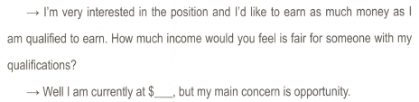

글로벌 1000대 외국계 기업 취업 전략

English
완벽하게 해야하느냐? - No
- 한국지사는 기본적인 회화실력에 본인 업무와 관련된 비즈니스 표현들을 좀 아는 정도면 충분
스펙이 좋아야 한다? - it depends
- 고스펙을 요구하는 곳도 있고 아닌 곳도 있다.
- 보통 컨설팅 회사는 고스펙을 요구
- 실제 지원자가 우리 회사에 얼마나 기여를 할 수 있는지 등을 따지는 실력 위주의 background를 따짐
- 직무와 관련된 경험(인턴, 아르바이트, 계약직 등)과 공부가 출중하다면, 이 부분을 잘 어필하면 충분히 승산이 있고, 그런 사례는 많이 있다.
- 스펙이 낮아도 직무 스킬이 뛰어나면 안 뽑을 이유가 없다.
- 자신의 강점을 분석해서 자신이 무엇을 잘 하고 어떤 직무에 적합한지, 또 그 점이 회사에 얼마나 기여할 수 있는지 스스로 정리해 볼 필요가 있다.
JD를 100% 충족시켜야 하나? - No
- 회사가 원하는 이상형 같은거다.
- 업무 스킬이 뛰어나면 전공, 영어, 엑셀 기타 등등은 다 무시해도 된다.
- JD에서 Fluent English와 Must (mandatory) Fluent English는 다르다.
- Fluent English는 희망사항으로 잘 하면 좋고, 못해도 지원 가능하다는 의미지만
- Must Fluent English는 영어가 유창하지 않으면 업무 자체를 할 수 없다는 의미이다.
‘이력서를 살펴보니 영어가 좀 부족한 거 같다. 일어가 좀 부족한 거 같다. 그런데 우리 회사에서 일할 수 있겠느냐?’ 이 질문에 많은 지원자들이 무너진다고 한다. 참 어이가 없다. 안될 것 같으면 아예 면접에 안 부르면 되지, 불러서 이런 질문을 하는 건 또 뭘까? 되니까 부른 거다. 영어는 어디까지나 옵션이므로, 그 외적인 부분들은 다 마음에 들기 때문에 면접에 불렀다. 그러면 결국 될만해서 부른 것이기 때문에, 의지만 잘 나타내면 되는데, 거기서 자신감 없는 태도를 보여서 마이너스를 당한다.
- 중요한건 직무 관련 경험, 스킬
- 신입은 능력이 아닌 태도가 80%, 경력의 경우 실제 업무 스킬이 가장 중요하다.
연애와 취업도 사람을 만나고 뽑는 입장에서 별반 다를 바가 없다. 무엇보다 중요한 것은 한번 해 보겠다는 자신감. 자신 있게 들이대는 사람이 미인도 얻고 취업도 한다.
계약직이라도 해야 할까? - it depends
- 원하는 직무와 산업군이고, 관련 경력이 없는 경우라면 경력을 위해서라도 계약직의 기회를 잡는 것이 좋다.
- 잡부가 아니라 하는 일은 정규직과 동일하지만 단순히 고용의 형태가 계약직인 경우 긍정적으로 고민할 것
외국계 기업의 특징은 신입이라도 6개월, 1년 경력이 있는 사람을 선호하는데 그 이유는 뽑아서 바로 업무에 투입하는데, 조금이라도 경력이 있는 사람이 더 효율적이기 때문이다. 인턴의 경험도 좋지만 사실 인턴은 경력이라기보다 경험에 가깝기 때문에 정식으로 급여를 받고 일을 했던 경력이 구직을 하는데 더 힘을 발휘한다.
외국계 기업의 특징은 선지원한 사람들을 우선적으로 면접을 보고 괜찮으면 바로 채용을 결정하는 경우가 많으므로, 먼저 공고를 접하고 최대한 빨리 지원하는 것이 유리하다.
1년 계약직으로 있다 하더라도, 결코 1년만 하고 나온다는 생각으로 일을 해선 안 된다. 1년간 쌓은 업무 실력과 네트워크가 다른 기회로 이어질 수 있다는 걸 항상 주지해야 한다.
계약 기간 중 정규직 자리가 오픈되어 그 곳으로 갈 수도 있고, 계약기간 중 일을 잘하고 네트워크를 잘 쌓았다면 퇴사 이후에도 일했던 곳에서 이렇게 새로운 제안을 받을 수 있기 때문에 계약직이라도 정규직 기회를 염두에 두고 임해야 한다.
채용형태
- 대부분 결원 또는 인력 수요가 발생하면 수시 채용한다.
- 내부 채용, 내부 추천, 인재풀 채용, 헤드헌팅 or 채용공고 순으로 진행된다.
가장 좋은 방법은 인턴이든, 아르바이트든, 계약직이든 관심기업에 일단 들어가서 그 회사 직원들과 네트워크를 형성하는 것이다. 외국계 기업의 특성상 내부 추천으로 직원을 많이 뽑기 때문에, 좋은 관계를 형성한 직원들로부터 내부 추천을 받는 것이 가장 확실한 방법 중 하나다.
회사보다 직무와 산업이 우선
- 스펙이 부족하더라도 직무 관련 경험, 스킬, 지식 등이 괜찮으면 충분히 어필 가능
- ’왜 이 회사인가?’에 대한 명확한 대답을 가지고 진정성 있게 지원할 것
- 길게 보고 직무와 산업에 집중하여 직업을 구하는 것이 커리어 관리에 도움이 된다.
인맥이 중요하다
- 내부추천 채용이 활발하게 이루어지므로, 네트워킹을 하는 것이 중요하다.
- 코멘토, LinkedIn 활용
적극적이고 예의 바른 후배를 싫어할 선배는 거의 없을 것이므로 한번 움직여 볼 만하다. 방법은 생각하면 얼마든지 나올 수 있는지 어떤 방법이 더 효율적인지는 각자가 한번 고민할 필요가 있을 것이다. 무엇보다 중요한 건 적극적으로 행동하는 것이다.
채용공고 사이트
Resume
Resume는 미국 소재 기업들이 요구하는 형식이다. 한 페이지 이내로 작성하는 것이 좋으며, 학력, 업무 이력, 특기 등 지원하고자 하는 직무와 관련된 특기나 이력 사항을 주로 어필하여야 한다. 학력 사항 또한 다양한 학위가 있는 경우, 지원하는 포지션과 관계가 깊은 항목 위주로 기재하여 주면 좋다.
- 관련성이 없다면 적지 말고, 분량은 1장이 좋다.
- 장점이 아니라면 적지 마라.
- 대학교 이전의 일은 아무 것도 적지 마라.
- 숫자로 구체화하라.
- 지원할 때마다 이력서를 최적화하라.
- 스펠링 및 문법 실수를 저지르지 말아라.
- 그림, 컬러, 밑줄, 전체 대문자 등 너무 화려하게 쓰지 말아라.
- 커버레터와 한 세트로 작업하라.
- 링크드인을 제외한 소셜네트워크 주소는 적지 말아라.
- 가독성을 확인하자.
- 문서 형식이 word로 한정되지 않은 경우에는 pdf로 변환하여 보내는 것이 좋다.
- 핵심역량에 집중하자.
- 구인란의 job description에 사용된 키워드를 최대한 많이 포함한다.
- 검토하고 또 검토하자.
- Personal Identification (인적사항)
- Career Summary, Job Objective (커리어 서머리) - optional
- 1 ~ 2문장으로 자신을 확실히 어필할 수 있으면, 포함시키면 좋지만, 미사여구만 가득한 임팩트 없는 커리어 요약을 쓸 거면 없는 것이 낫다.
- 잘 쓸 자신 없으면 적지 마라
- Education
가장 최근에 획득한 학력(최종 학력)부터 과거 순으로 기술한다. 일반적으로 영문 이력서에 학력사항을 경력사항보다 상단에 위치시킨다. 하지만 학력보다 경력을 더 강력하게 어필하고 싶다면 위치를 바꿔도 무방하다.
- Professional Experience
- 가장 중요
- 객관적 수치를 포함해서 최대한 자세하게 적으면 된다.
- 현재 직장에서 성과를 거둔 경험
- 지원자가 해결했던 문제는 무엇이었고 결과는 어떻게 되었는지에 대해 기술
- 현재 직장에서 지원자가 긍정적으로 기여한 부분에 대해 기술
- 수상경력에 대해 기술
- 성과를 거둔 프로젝트에 대해 기술
- 지원자의 능력을 인정받았던 경험
- 기타 업무경력 및 성과내용
- Additional Skills
- 자격증, 외국어 능력, 컴퓨터 숙련도 등
- Reference
- 일반적으로 기입하지 않는 것이 보통
- 인터뷰에서 자연스럽게 밝히거나 커버레터에서 자연스럽게 밝히는 것이 일반적
- sample site
Find Jobs. Build a Better Career. Find Your Calling | Monster.ca | Monster.ca
CV
CV는 Curriculum Vitae의 약자로 유럽이나, 중동, 아프리카, 아시아 지역의 기업 채용에 요구되며, 미국에서는 연구나 교육 쪽의 일자리에서만 요구되는 경향이 있다. 그런 경우 연구나 조사경험, 출판경험, 수상내역, 자격증 등 본인의 학력사항 및 경력사항을 자세하게 기술하기 때문에 2페이지 이상 넘어가는 경우가 일반적이다.
입사지원을 하는 기업에서 Resume 또는 CV를 명시하면, 맞춰서 작성하면 되며, 특별한 명시 없이 영문 이력서라고 한다면 기업의 국적에 따라서 맞춰서 작성하면 된다.
Cover Letter
커버레터(Cover Letter)를 한국말로 직역하면 ‘덮개 편지’ 또는 ’덮개로 쓰여지는 편지’이다. Cover Letter는 Resume 또는 CV 앞에 동봉하는 ’편지’의 개념이며, 국내기업 입사지원 서류와 비교하자면 ’자기소개서’와 가장 비슷하다고 할 수 있다.
Cover Letter의 주 목적은 Resume나 CV를 보충 설명하는 ’나의 이야기’를 들려주는 것이다. 그렇기 때문에, 학력 및 업무 경력에 대한 배경이 제시되어야 하며, 그 배경이 지원하는 회사나 직종에 어떻게 연관되며 어떻게 도움이 될 수 있을지에 대한 어필을 해야 한다. 일반적으로 한 장 이내로 작성되어야 한다.
- 이력서에서 다 보여줄 수 없는 자신의 성격, 장점, 능력을 더 구체적으로 이야기하는 문서
- “해당 직책에 자신이 왜 적격인지”를 지금까지의 업무 경력, 관련 경험, 해당 업무에 대한 관심 및 동기, 자격 요건 등을 통해서 구체적으로 설득해야 한다.
- 해당 직책 및 업무와 관련이 없는 내용은 언급하지 않는다.
- 양식은 영문 편지의 양식과 동일
- Formal business letter
- 구성
- Contact information
- 인사담당자 연락처
- 서론
- 본론
- 자신이 왜 적절한 인재인지 명확하게 설명
- 직무와 직접적으로 관련된 직장 경력, 관련 경험, 기술 및 능력 등을 통해서 회사가 필요한 인재라는 것을 설명해야 한다.
- 지원회사에서 원하는 자격요건에 대해 언급하고 그 요건에 맞는 자신의 자격을 나열하는 것이 바람직
- 본인만의 경쟁력을 바탕으로 한 입사 후 포부를 과하지 않은 정도로 밝혀도 무방
- Job Description에 나와있는 키워드를 이용해도 무방
- 결론
- 입사에 대한 적극성을 보여주는 것이 좋음
- 인터뷰를 원한다는 사실을 적극적으로 어필하고, 만약 일주일 안에 답장이 없다면 다시 연락드리겠다고 말하는 것도 좋다.
- 맺음말 및 서명
- 회사마다 수정하거나 새로 작성
- 커버레터에서 영문 이력서에서 하지 못한 말을 하라
- 구구절절 설명하지 말고 짧고 간결하게
- 검토하고 또 검토하자.
- 참고 사이트
입사지원 서류 제출시점
보통은 2주 정도 혹은 채용 시까지라는 조건으로 공고를 내는데, 2주 동안 열심히 준비해서 공고 마감 전날 이력서를 제출했는데, 답변이 없다. 떨어진 걸까? 내가 뭐가 부족했지?
떨어진 가장 큰 이유 중 하나는 바로 타이밍이다. 외국계 기업의 특징은 결원 시 바로 채용을 해서 그 자리의 공백이 길지 않도록 하려고 한다. 따라서 가능한 빠른 시간 내에 채용을 하려고 한다. 그래서 공고를 내고 하루 만에 괜찮은 지원자가 나타나면 다음 날이라도 바로 면접을 보고 그 주에 채용을 경정하는 경우가 다반사다.
평소 관심 있는 기업이 있다면 미리 이력서를 준비해 놓았다가, 공고가 나고 하루 이틀 내 지원을 하면 면접을 볼 기회가 그만큼 높아질 수 있다. 물론 자신의 이력이 회사가 원하는 바운더리 안에는 들어와야 한다.
평소 관심을 두고 있는 산업군 내의 회사라면 그다지 많은 시간이 걸리지 않는다.
최적 표현
관리직과 임원직
- Lead
- Oversee
- Deliver
- Handle
- Orchestrate
커뮤니테이션 분야
- draft
- edit
- collaborate
- synthesize
- propose
리서치
- investigate
- measure
- analyze
- interpret
- test
금융, 재정 분야
- calculate
- project
- allocate
- balance
- conduct
행정, 일반 사무 분야
- implement
- schedule
- route
싫어하는 이력서의 전형
- 일관성이 없는 이력서
- 원하는 직무와 관련 없는 내용들은 ’짜증이 난다’라고 한다.
- 직무와 관련된 일관성 있는 내용으로 쭉 작성해야 한다.
- 직무와 관련된 이력을 중심으로 적어야 하는데, 본인이 내세우고 싶은 내용들 위주로 적으면 채용 담당자들은 혼란스럽다.
- 힘들게 딴 자격증과 관련 경험은 인정을 하겠지만, 지원 직무와 관련이 없다면 지원자의 직무능력과 진정성을 의심한다.
- 신입의 경우 워낙 이력서에 쓸 내용이 없다보니 여기저기 다 끌어모아서 칸을 채우려고 하는 경향이 강한데, 쓸 내용이 없으면 안 쓰면 된다.
- 관련 없는 내용보다 관련 있는 내용 몇 개를 적는 게 채용 담당자를 덜 스트레스 받게 한다.
- 채용 담당자들은 수십 수백 장의 이력서 중 한 장의 이력서를 훑는데 대략 30초를 쓰고, 마음에 들면 자소서를 보는데, 그도 보통 1분 내외다.
- 30초 만에 이력을 훑을 때는 당연히 직무와 관련된 내용만 본다. 그 외의 내용이 많으면 채용 담당자의 눈만 아프게 한다.
- 공란이 많더라도 직무 관련 내용만 있다면 오히려 눈에 더 잘 들어오고, 더 자세히 볼 확률이 높다.
- 칸을 많이 채우는 것이 중요한 것이 아니라, 작더라도 직무와 관련 내용만 적는 것이 서류 통과할 확률이 높다.
- 이력서는 회사가 듣고 싶어 하는 내용을 적는 것이다.
- 회사는 여러분의 개인 인생사에는 관심이 없다.
- 어떠한 직무능력을 갖추고 있으며, 맡게 될 일을 얼마나 잘 수행할 것인지에 관심이 있다.
- 회사가 원하는 내용으로 이력서를 작성해야 한다.
이력서 작성 시 피해야 할 실수 및 주의사항
- 지나친 요약
- 지나치게 요약하면 별로 중요하지 않은 일을 맡았거나, 직무경험이 없다고 생각할 수 있다.
- 자서전 형태
- 회사는 개인의 삶에 대해 그다지 관심이 없으며, 해당 직무를 수행할 능력이 충분한지를 파악하려고 노력할 뿐이다.
- 복잡한 포맷
- 무성의한 구성
- 불필요한 내용이 편집에 영향을 줄 경우 과감히 삭제
- 회사의 이름 대신 귀사를 쓴다 (x)
- 회사명을 직접 넣는 것이 더 진정성 있어 보인다.
- 신입의 경우 희망 연봉은 그냥 ’회사 내규’라고 적는 것이 좋다.
- 경력도 회사 내규로 적는 것이 좋다.
- 뽑아만 준다면 뭐든 하겠다. (x)
- 외국계 기업에서 가장 싫어하는 표현
- 기본적으로 지원자가 어떤 역량을 갖추었으며, 이런 역량을 지원하는 회사에 이렇게 발휘할 테니 나를 뽑아야 한다고 설득하는 것이 이력서, 커버레터인데 무작정 뽑아주면 시키는 대로 뭐든 다하겠다는 식의 접근은 아르바이트를 지원할 때나 해야 될 표현
- 솔직한 이직사유 (x)
- 이직사유는 더 나은 커리어를 위해서가 제일 좋음
- 기타
- 오타, 비문, 서식 정리 안 된 포맷, 줄 간격, 글씨체, 글씨 크기 등 서류 정리의 기본이 안되어 있으면 바로 쓰레기통으로 직행
면접
- 단기적으로는 직무를 원활히 수행할 수 있는 사람, 장기적으로 회사의 인적자산의 일부로서 회사의 발전에 도움이 될만한 인재를 찾는 것
- 면접 일정이 결정되었다면, 정확한 인터뷰 장소, 면접관의 이름(정확한 발음) 및 직위 파악
- 만약을 대비해 몇 부의 이력서 여분으로 준비
- 지원하는 회사에 대해 알아볼 것
- 도서관, 해당 회사 고객, 경쟁사, 사내 고객상담실, 홈페이지 등
- 중요하다고 생각되는 기사나 정보는 복사해서 면접 시 지참
- portfolio 준비
- 기술이나 지식을 나타낼 수 있는 서류
- 깨끗한 바인더에 철해서 면접 시 면접관에게 제출할 수도 있고, 아니면 파일로 만들어서 면접 시마다 참고용으로 제시하기만 해도 상관없다.
- 제대로 준비되지 않으면 마이너스
- 이력서에 작성한 내용을 기억해둘 것
- 내용에 차이가 있으면 following question에서 털릴 수 있음
- 모의 질문내용을 만들어 본다
- 자연스럽고 간결하게 대답할 수 있는 연습을 미리 해둔다.
- 경력에 관한 질문은 핵심 내용만 간단히 답변
- 자주 묻는 질문
- 구체적 직무 성과 몇가지
- 지원한 회사의 배경 및 직무내용
- 장래 진로 및 지원동기
1분 자기소개
- 왜, 이 회사와 직무에 지원하는가? 우리 회사에서 당신의 역량을 어떻게 발휘할 것인가?
- ‘언제부터 이 산업, 회사와 직무에 관심을 가져왔고, 그로부터 무엇을 준비했으며, 그렇게 준비한 역량을 지원하는 회사에 이렇게 발휘하겠다’
- 지원동기와 입사 후 포부
본인이 면접관으로 있을 때 1분 자기소개까지만 하면 1등과 꼴찌가 딱 나눠지고, 그 결과는 신기하게도 나머지 면접관들의 것과 똑같았다고 한다. 그들이 귀 기울여 들었던 부분은 모두 ’왜 이 직무와 이 회사에 지원했고, 어떻게 그 역량을 우리 회사에서 발휘할 것인가?’였다고 한다. 그 내용으로 말하는 사람은 대부분 통과가 되었고, 성장배경, 성격 등~~, 자기 얘기가 아닌 어디서 들은 좋은 말, 명언 등을 쭉 나열하는 사람들은 거의 다 바로 탈락을 시켰다고 한다.
1분 자기소개는 철저하게 지원동기 위주로 말해야 좋은 점수를 받지, 자기소개서에 있는 모든 내용을 요약해서 나열하듯이 말하면 점수를 거의 못 받는다고 한다. 본인이 하고 싶은 얘기를 하지 말고 회사가 듣고 싶어 하는 얘기를 1분 안에 요약해서 말하는 것이 1분 자기소개이다. 1분이라는 상징적인 의미는 그만큼 핵심만 말하라는 것이라는 점을 잊지 말자!
영어면접
- 기본적인 의사소통이 가능한지 확인
- 가장 중점적으로 보는 것은 전달력
- 면접장에서 문법, 발음 등은 잊어버리고 하고 싶은 말에 집중한다.
- Pause하지 말고 그냥 내뱉어라.
- 오로지 의사전달에만 집중하라.
- 자신 있게!
영어 예상 질문
- 학력 - 재학기간, 학교 및 전공선택 사유, 관심분야, 학업성적, 과외활동 등
- 경력 - 입사동기, 업무내용, 상사에 관한 의견, 가장 두드러진 업적, 이직사유, 연수 또는 교육 여부, 직장동료들의 자신에 대한 평가, 직장 분위기 등
- 지원동기 - 지원하는 회사 및 직무에 관한 정보의 파악 여부 및 지원 동기, 해당 업무에 적합한 기술 및 경력 유무, 이상적인 상사의 타입이나 희망 직무 등
- 신상 - 회사에 원하는 것은 무엇인지, 해당 직위에서 가장 중요한 것은 무엇인지, 장단기 목표는 무엇인지, 충성심, 행복, 성공, 독립심, 믿음 등에 대한 자신의 정의는 무엇인지, 자신이 수행한 업무 중 가장 자부심이 있는 일은, 자신과 계속해서 부딪히는 사람이 있을 경우 어떻게 해결하는지, 전근이 될 경우, 업무수행을 저해하는 요소는 어떤 것인지 등
- 면접관에게 질문할 수 있는 내용
- 타회사와의 차이점
- 타회사에 대한 경쟁력
- 주력사업 분야
- 입사 후 연수계획
- 직무의 리포팅 라인 등
- 희망임금에 대한 질문
- 직접적인 대답은 피하고 우회적으로

I’m very interested in the position and I’d like to earn as much money as I am qualified to earn. How much income would you feel is fair for someone with my qualifications?
Well I am currently at $___, but my main concern is opportunity.
- 적정임금을 제시할 경우 즉시 수락
- 판단이 곤란한 경우 하루 정도의 여유를 요청할 수는 있음
- 주저하면 다른 지원자를 채용할 수 도 있음
면접관에게 질문할 수 있는 기회가 주어졌을 때 질문할 수 있는 내용은 다음과 같다.
What would I be expected to accomplish in this position? What are the greatest challenges in this position? How do you think I fit the position?
지원하는 직무에 대해 질문하지 않는 것이 흥미가 없기 때문이라고 생각할 수도 있으므로, 기회가 허락한다면 업무에 대한 다양한 질문을 던지는 것이 좋다.
영어 인터뷰 현장에서 주의할 점
- 깔끔하고 단정한 복장
- 호감 가는 첫인상을 만들 기회는 두 번 다시 찾아오지 않음
- 10 ~ 15분 일찍 도착
- 면접장에서 작성해야 하는 지원서가 있는 경우가 있음
- 입장부터 매우 중요
- 면접관의 이름을 정확히 발음하는데 문제가 있다면, 성(last name)만을 부르도록 한다.
- 면접 시에는 면접관(들)의 얘기를 경청하는 자세를 끝까지 유지하도록 한다.
- 면접 초반에는 면접관으로 하여금 해당 직무 내용을 상세히 설명해 줄 것을 부탁해서, 자신의 경력사항을 적절히 말하는 것도 권할만한 방법이다.
- 완벽한 영어에 집착하지 않는다. Broken English라도 전달하고자 하는 내용에 집중해서 말한다.
- 단답식 답변은 피하라. “Yes.” 또는 “No.”와 같은 단답식 답변은 금물이다. 가급적 상세한 내용을 설명한다.
- 거짓말을 하지 말라. 진실된 답변을 솔직하고 간결하게 말한다.
- 전 직장 상사에 대해 경멸조로 평가하지 말라. 현직 또는 전 직장에 대해 불평하는 것은 좋지 못한 인상을 남긴다.
- 자신을 팔아라. 면접장은 자기 자신을 파는 곳이다. 면접관에게 여러분이 무엇을 할 수 있는지, 여러분의 가치가 무엇인지를 적극적으로 표현해야 한다.
- 자신의 장점을 보다 효과적으로 전달하도록 노력하라. 판매 실적이나 운용한 시스템 등을 구체적으로 설명하는 것이 효과적이다.
- 일에 대한 집착을 보여라. 지우너한 직무에 대한 강한 애착을 보이도록 한다. 소극적인 자세를 좋은 인상을 남길 수 없다.
- 적절한 질문을 해라. 면접 과정은 일방적인 질문에 답변하는 것만은 아니다. 쌍방 간 커뮤니케이션이 이루어져야 한다. 단, 급여, 휴가, 퇴직금 등에 대한 질문은 피해야 한다. 면접관이 희망 임금을 질문할 경우, 임금보다는 지원하는 직무에 보다 관심이 많다고 답변하는 것이 좋다. 반면, 회사 직책 또는 면접관에 대한 질문은 하는 것이 좋다. 영업직의 경우 성과와 연관해서 보너스를 질문하는 것은 무난하다.
- 질문의 유형에 따라 적절히 답변하라. 면접관이 정치 내지는 사회문제로 화제를 돌릴 경우, 개인적인 입장을 애써 말하는 것보다는 경청하는 자세가 바람직하다.
- 면접이 끝날 때까지 자신감을 잃지 않는다. 인터뷰가 흡족하게 진행되지 않았더라도 실망하는 기색을 보이거나 낙담해서는 안 된다. 실망했을 때 어떤 반응을 보이는지 파악하기 위해 일부러 상황을 유도하는 면접관도 있다.
- 면접 후에 Thank you letter를 보내도록 한다.
Dear Mr. Viewer I wanted to thank you for taking the time yesterday to meet with me and for sharing information on your company and the career opportunity available. I found this interview process very informative and useful as a tool for exploring my career path opportunities with Widgets Unlimited. As we discussed yesterday, It is my belief that my accounting skills and experience would prove to be an asset for your company. I am looking for a career that will utilize my current accounting skills, while allowing me to grow and learn more working with an industry leader who is progressive in the marketplace. After meeting with you and learning more about the company and corporate goals, I believe this would be a successful match for both of us. Again, it was a pleasure meeting you. I look forward to hearing from you regarding the next step in the recruiting process. Sincerely, Ima Candidate
Etc
서류를 제출하거나 면접을 진행하고 1-2주 이내에 다음 일정에 대한 안내가 없는 경우에는 해당 채용건에 대해서는 더 이상의 진행이 없는 것으로 생각해야 하며, 회사에서 이미 채용을 해서 close가 되는 경우도 있지만, 내부 사정으로 인해 채용이 연기되거나 취소되는 경우도 있으므로, 꼭 불합격했다고 생각할 필요는 없다. 1주일 이상 연락이 없고, 결과가 궁금하다면 되사에 정중하게 물어보면 된다. ‘어떤 건으로 지원했는데 다음 일정이 언제쯤 가능한지’ 문의를 하는 것이 바람직하며, “합불을 알려주세요”라고 질문하는 것은 바람직하지 않다.
- Finance 외국계 리스트


헤트헌팅 회사 리스트

./Untitled%204.png